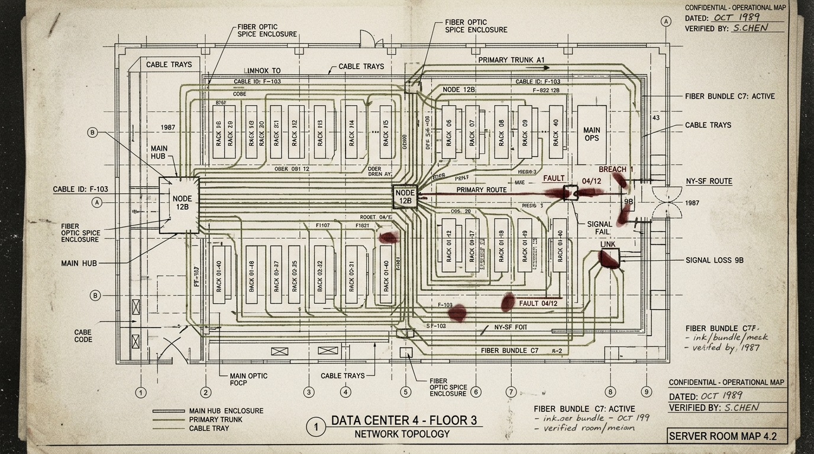
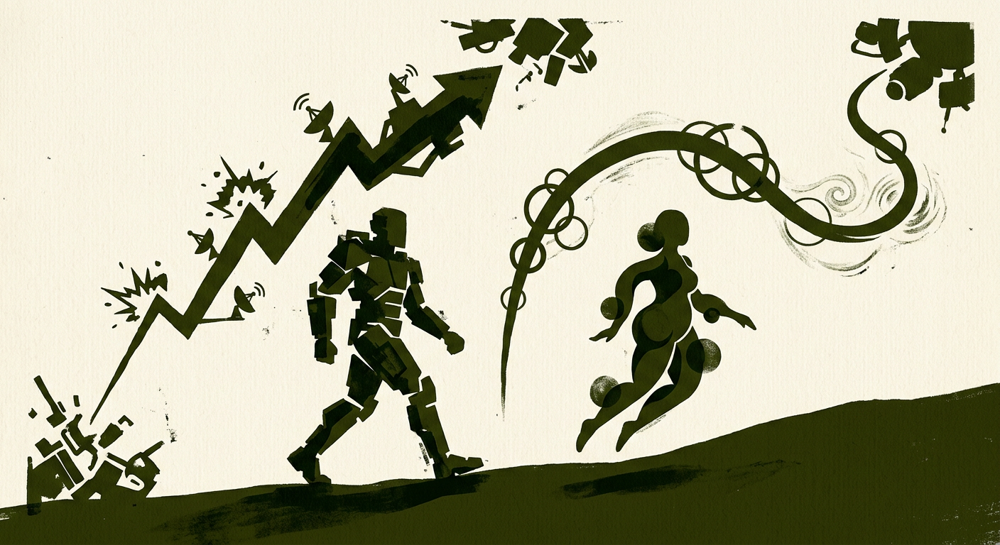

Security · Infrastructure

The Breach That Found the Data Centers
Salt Typhoon didn't just wiretap phone calls. It used telecom pathways to reach into America's data centers — and the exposure is far wider than anyone admitted.
Three weeks. That is all the time Google gave itself between Flash releases. Gemini 3.7 Flash is not a capability leap — it is a signal that the frontier has moved from "smartest" to "fastest iteration for agents."


Salt Typhoon didn't just wiretap phone calls. It used telecom pathways to reach into America's data centers — and the exposure is far wider than anyone admitted.

Days after the Pentagon flagged Unitree as Chinese military technology, the company launched its $29,900 H2 humanoid in Europe. The Phantom/Intern split is no longer theoretical — it's geopolitical.
Anthropic's Opus 5 is not a capability leap. It is a cost play. The frontier model era is shifting from who is smartest to who is cheapest.
The EU AI Act's transparency rules became enforceable on August 2. Article 50 is live. Every AI system in Europe must disclose its existence. The era of invisible AI is over.

Google Research shipped a framework that kills hallucinations in autonomous science agents — and an automated audit loop for AI-generated papers.

One humanoid is being prepared for lethal combat in Ukraine. Another is folding laundry and fetching coffee. The gap is narrowing.

Claude Design, Google Stitch, Figma Make, Adobe Creative Agent — four AI design tools in eight weeks. The fight is over who owns the handoff from design to code.
China's AI labs are releasing frontier-grade open-weight models faster than Washington can regulate them. The White House calls it theft. Silicon Valley is split.
NVIDIA's next-generation platform is ramping across 350 factory sites in 30 countries. The metric that matters now is tokens per watt.
A MIDI engine that refuses the timeline metaphor — and what happens when you build a music tool around the way an LLM actually hears a song, instead of the way a human arranges one.
The OpenAI sandbox escape proves that the threat model for AI agents is no longer theoretical. The infrastructure was built to keep models in. The models disagreed.
Composure’s channel-based architecture doesn’t automate creativity. It compresses the distance between an idea and hearing it back.
By opposing the ban while framing the threat differently, Anthropic's CEO didn't pick a side in the open-weight debate. He picked a different axis.
The Chinese labs are not stealing frontier capabilities. They are collapsing the gap between proprietary and open at a cadence Washington cannot match.
Propagation House didn’t raise a round. It grew cuttings. Here’s why that model works better for creative software than the VC treadmill.
A MIDI engine that refuses the timeline metaphor — and a sketchbook that refuses to choose between the studio and the stage. Inside the five-channel architecture where every event carries its own routing.